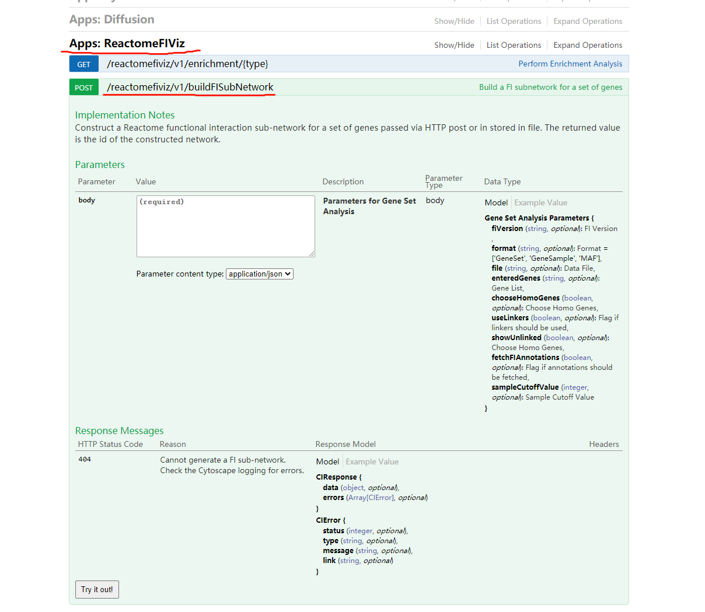

经过我的一番摸索，终于搞明白了，这个R包本身说明并不详细，具体参数基本全靠猜，当然我还参考了Cytoscape automation in R using Rcy3(仅仅参考了一行代码)，累死我了- -！
if (!requireNamespace("BiocManager", quietly = TRUE))
install.packages("BiocManager")
BiocManager::install("RCy3")本文以Cytoscape中的Reactome FI Apps中的“Gene Set/Mutation Analysis”功能生成网络图，并导出为csv文件为例具体讲解自动化(Automation)流程。
废话不多说，直接导入下面代码，并修改相应的path
library(RCy3)
filename.input <- 'path.of.your.input.file'
filename.output <- 'path.of.your.output.file'
)
body.reactome <- list(
fiVersion = '2019', # Reactome FI Networks Version, 不同版本结果不同
format = 'GeneSet', # Specify format
file = filename.input, # 对应的是GUI中的 Choose data file：
enteredGenes = 'null', # 对应的是GUI中的 Or enter gene set：
chooseHomoGenes = FALSE,
useLinkers = FALSE, # 对应的是GUI中的 Use linker genes：
showUnlinked = FALSE, # 对应的是GUI中的 Show genes not linked to others：
fetchFIAnnotations = TRUE, # 对应的是GUI中的 Fetch FI annotations：
sampleCutoffValue = '4'
)
body.export <- list(network = 'current', # 默认参数值，即当前窗口显示的网络
options = 'CSV', # 输出的文件格式
outputFile = filename.output) # 输出的文件名(最好为绝对路径)
# 调用Reatome FI 这个Apps中的"Gene Set/Mutation Analysis"功能
cyrestPOST(operation = 'reactomefiviz/v1/buildFISubNetwork',
body = body.reactome,
base.url = 'http://localhost:1234')
# 以边的形式导出网络表格
cyrestPOST(operation = 'v1/commands/network/export',
body = body.export,
base.url = 'http://localhost:1234')值得说明的是，有一系列cyrest的函数：
cyrestPUT()
cyrestGET()
cyrestPOST()
cyrestDELETE()
cyrestAPI()
具体使用哪一个需要参考CyREST API和CyREST Command API.
例如要调用Reactome FI 中的富集分析功能，那就去CyREST API中找到相应的函数点进去：

POST则调用cyrestPOST()，以此类推。后面那串去掉第一个斜杠复制到参数operation中即可。至于参数body则需要在网页生成json格式，在根据本文的格式一一对照修改即可。base.url则是默认参数，一般无需修改。
还需注意的是程序运行时需要保持Cytoscape打开，并且处于正常运行状态，因为其命令传递方式大概是，通过Rstudio传到swagger服务器，再从服务器转到本机的Cytoscape。
最后，其他更详细信息请参考Cytoscape-automation(虽然我觉得应该够用了，嘻嘻)。